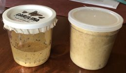
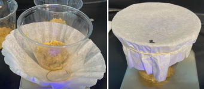
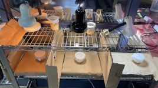
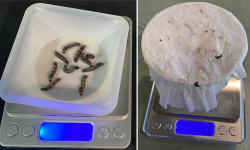
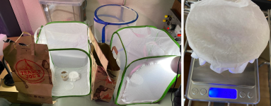

1
|
Collect all Materials:
30 caterpillars3 habitats and containersCaterpillar foodA weighing scale and weigh boats3 multicolored light bulbs
|
 |
2
|
Set Up the Three Containers:
Put 150mg of food in each containerPut 10 caterpillars in each containerCover the container with a coffee filter secured by a rubber band
|
 |
3
|
Set Up the Experiment
Create 3 designated sectionsPosition a different colored light to shine into each containerBe sure to not have the light from section leaking into another
|
 |
4
|
Measuring Caterpillar Mass:
Place a weigh boat onto the scale and zero itPush the caterpillar out of the container onto the weigh boat by using a small paint brushWhen the chrysalis phase begins, place the entire container onto the scale
and subtract the mass of the empty container from this mass once the experiment is over
|
 |
5
|
When Butterflies Emerge:
Move the butterflies into the habitatsGive them a few drops of water dailyTo find their mass, catch a buttefly in an empty cup and cover with a coffee filter and rubber band.
Place the cup on the scale and subtract the mass of the empty cup
|
 |